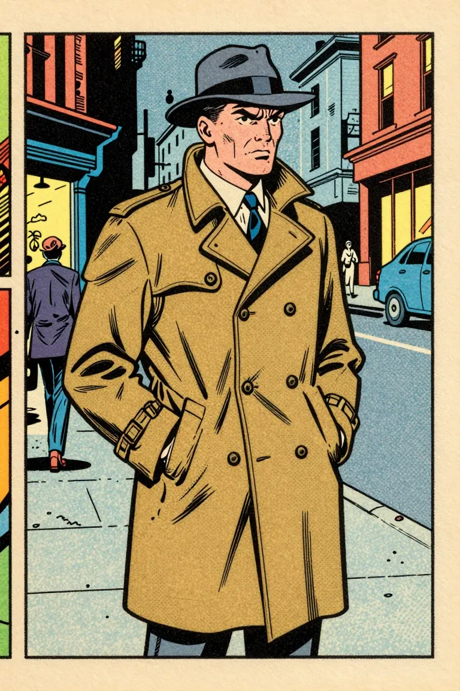

печать · 1896–1975 · также: Точки Бен-Дэй, Четырёхцветный комикс, Комикс на газетной бумаге, Воскресные комиксы
Комикс или газетная картинка, напечатанная на дешёвой газетной бумаге четырьмя плоскими красками, с оттенками из фиксированных точек плёнок Бенджамина Дэя. Воскресное приложение 1890-х и комикс 1930–1960-х сделали чёрные линии, основные цвета и точки массовым видом.

Главная идея
Четыре краски, чёрная линия и несколько фиксированных точечных тонов способны раскрасить целый мир за цент.
Принципы дизайна
Рисуйте каждую форму твёрдой чёрной линией кисти или пера; цвет лишь заливает.
Берите только голубой, пурпурный и жёлтый на 0, 25, 50 и 100 %, по одному или в смеси; других тонов у колориста нет.
Делайте каждый оттенок правильным полем точек одного размера, а не фотографическим растром.
Кладите плоский основной цвет на главные фигуры и лёгкий точечный оттенок на фон и кожу.
Принимайте перекос приводки 1–2 мм и лёгкое растекание краски на мягкой бумаге.
Берите реплики в облачках и подписи ручным шрифтом, прописными.